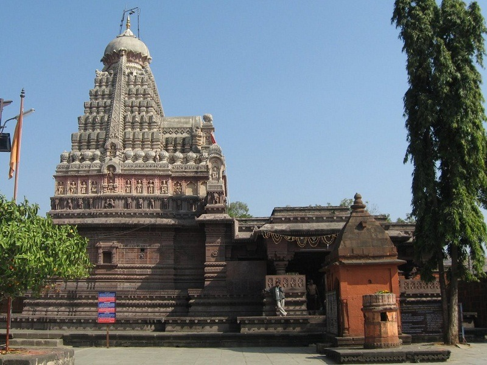

Grishneshwar Temple, located in Ellora near Aurangabad, Maharashtra, is one of the twelve Jyotirlingas of Lord Shiva and holds great spiritual significance. Built in traditional South Indian temple style, it features intricate carvings and a five-tiered shikhara. The temple, constructed in red volcanic stone, was restored in the 18th century by Queen Ahilyabai Holkar. Situated near the UNESCO World Heritage Ellora Caves, it attracts devotees and tourists alike. This ancient temple is revered as the last Jyotirlinga, making it an essential pilgrimage site for Shiva devotees.
Historical Significance
The Grishneshwar Temple holds immense historical significance as one of the twelve Jyotirlingas, considered sacred in Hinduism. Believed to date back to the 13th century, the temple faced destruction during invasions but was later rebuilt in the 18th century by Queen Ahilyabai Holkar of Indore, who also restored several other sacred sites in India.
Its proximity to the Ellora Caves, a UNESCO World Heritage Site, highlights the region's ancient cultural and religious importance. The temple’s history reflects the resilience of Indian spiritual traditions, as it survived periods of decline and was revitalized to remain a prominent pilgrimage site.
Architectural Features
The Grishneshwar Temple is a prime example of South Indian Dravidian-style architecture, constructed from red volcanic stone. The temple features a five-tiered shikhara (spire) above the sanctum, which houses the Jyotirlinga of Lord Shiva. The temple is adorned with intricate carvings and sculptures of deities and mythological scenes, which are found on the walls and pillars, showcasing exceptional craftsmanship.
Best Time to Visit
Winter (October to February): This is the ideal time due to pleasant, cool weather, making it comfortable to explore the temple and nearby attractions. Temperatures range from 10°C to 30°C (50°F to 86°F).
Avoid Summer (March to June): The temperatures can soar above 40°C (104°F), making the visit quite uncomfortable due to the intense heat.
Monsoon (June to September): While the region becomes lush and green, heavy rainfall can cause disruptions, making travel to the temple difficult and less enjoyable.
location
The Grishneshwar Temple is located in Ellora, near Aurangabad in Maharashtra, India. It lies approximately 30 kilometers from Aurangabad city and is situated close to the famous Ellora Caves, a UNESCO World Heritage Site
Festivals
Maha Shivaratri (February/March) is a significant time for worship at Grishneshwar and attracts large crowds.
Shravan month (July-August) also sees a spike in pilgrims visiting for special prayers.
For fewer crowds: Visit on weekdays outside major festivals for a more peaceful experience.